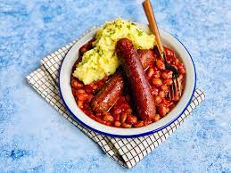

🍴 Good Old Bangers & Mash

About The Dish
A British classic with a homely twist. This dish is on our menu, week in, week out. And for good reason, its tasty, quick to make and so comforting! But for our mash we do jacket potatoes, teamed with baked beans and melted cheddar cheese. YUM!
Ingredients
- 4 Baking Potatoes
- Tin Of Baked Beans
- Pack Of Good Quality Sausages
- Butter
- Cheddar Cheese
Method
- Pre-heat your oven to 180c. Meanwhile, wash your potatoes, prick the skin and place in a pan.
- Once the oven is hot, add your potatoes to the oven and cook for 1-2 hours until cripsy on the outside, fluffy in the middle.
- Place sausages in a pan and oven cook for 30 mins.
- Heat baked beans and grate the cheese.
- Once your potatoes are ready, cut open and add lashings of butter.
- Serve and enjoy!